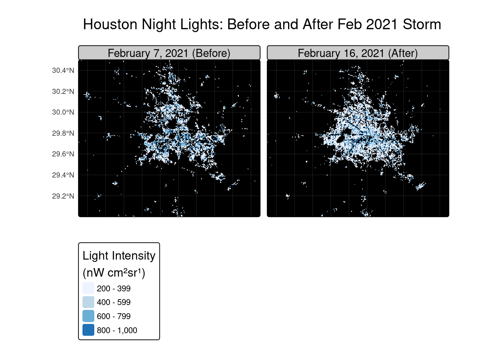
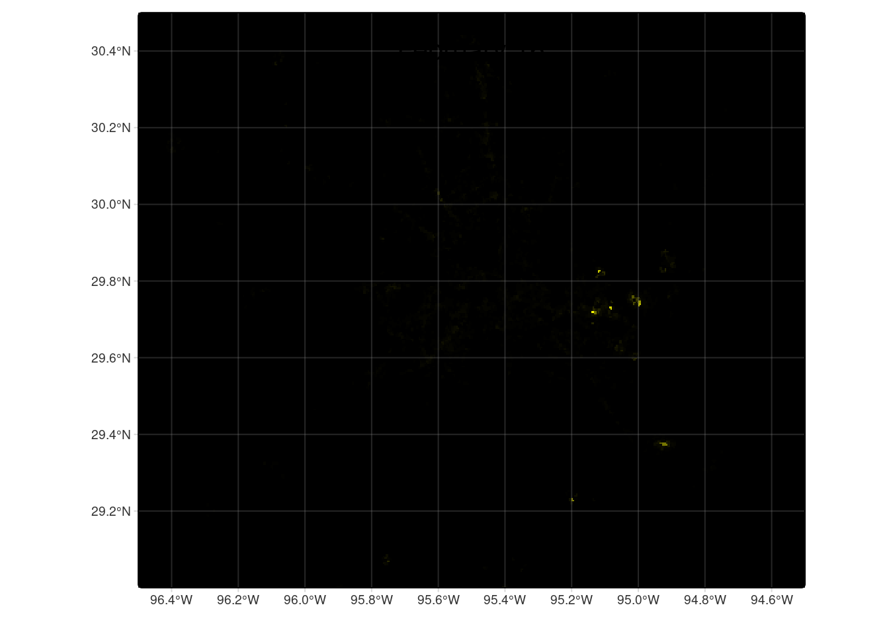

pacman::p_load('tidyverse',
'sf',
'here',
'tmap',
'kableExtra',
'patchwork',
'ggthemes',
'colorRamps',
'stars',
'terra')Extreme weather events
In this project we will examine environmental effects of Texas storms:
I’m going to start by loading in the necessary packages
In this project I am working with multiple datasets that may have different crs’s. I am going to be using functions to check and manually transform the crs’s of the datasets
Create two functions
# Function to check and align CRS of two sf objects
check_crs <- function(data1, data2) {
if (st_crs(data1) == st_crs(data2)) {
message("CRSs match!")
return(data1) # return the original object
} else {
warning("CRSs do not match. Transforming target to match reference...")
data2 <- st_transform(data1, st_crs(data2))
return(st_crs(data2))
}
}
# This function compares the crs's of two datasets - good for checking before plotting to avoid crashes
# Function to check if we are working with espg 3083
check_3083 <- function(data) {
if (st_crs(data)$epsg == 3083) {
message("CRS ok")
return(data) # return the original object
} else {
warning("CRS does not conform, transforming now")
data_transformed <- st_transform(data, st_crs(3083))
return(data_transformed)
}
}
# This function checks if a specific sf is in ESPG 3083 which is the Texas Centric Albers Equal AreaData import
Light data
Each day has 2 .tif files
lights_07_1 <- read_stars(here::here('data', 'VNP46A1', 'VNP46A1.A2021038.h08v05.001.2021039064328.tif'))
lights_07_2 <- read_stars(here::here('data', 'VNP46A1', 'VNP46A1.A2021038.h08v06.001.2021039064329.tif'))
lights_16_1 <- read_stars(here::here('data', 'VNP46A1', 'VNP46A1.A2021047.h08v05.001.2021048091106.tif'))
lights_16_2 <- read_stars(here::here('data', 'VNP46A1', 'VNP46A1.A2021047.h08v06.001.2021048091105.tif'))Buildings
The buildings need a query to select all the building types including null buildings
buildings <- st_read(here::here('data', 'gis_osm_buildings_a_free_1.gpkg'),
query = "
SELECT * FROM gis_osm_buildings_a_free_1
WHERE (type IS NULL AND name IS NULL)
OR type IN ('residential', 'apartments', 'house', 'static_caravan', 'detached')",
quiet = TRUE)Road data
This query acts to select the motorways from the road layer
roads <- st_read(here::here('data', 'gis_osm_roads_free_1.gpkg'),
query = "SELECT * FROM gis_osm_roads_free_1 WHERE fclass='motorway'",
quiet = TRUE)Socioeconomic layers
Lastly, we will want to look at the census tracts and median income
st_layers(here::here('data', 'ACS_2019_5YR_TRACT_48_TEXAS.gdb'))Driver: OpenFileGDB
Available layers:
layer_name geometry_type features fields crs_name
1 X01_AGE_AND_SEX NA 5265 719 <NA>
2 X02_RACE NA 5265 433 <NA>
3 X03_HISPANIC_OR_LATINO_ORIGIN NA 5265 111 <NA>
4 X04_ANCESTRY NA 5265 665 <NA>
5 X05_FOREIGN_BORN_CITIZENSHIP NA 5265 1765 <NA>
6 X06_PLACE_OF_BIRTH NA 5265 1221 <NA>
7 X07_MIGRATION NA 5265 1793 <NA>
8 X08_COMMUTING NA 5265 2541 <NA>
9 X09_CHILDREN_HOUSEHOLD_RELATIONSHIP NA 5265 263 <NA>
10 X10_GRANDPARENTS_GRANDCHILDREN NA 5265 373 <NA>
11 X11_HOUSEHOLD_FAMILY_SUBFAMILIES NA 5265 781 <NA>
12 X12_MARITAL_STATUS_AND_HISTORY NA 5265 759 <NA>
13 X13_FERTILITY NA 5265 399 <NA>
14 X14_SCHOOL_ENROLLMENT NA 5265 779 <NA>
15 X15_EDUCATIONAL_ATTAINMENT NA 5265 715 <NA>
16 X16_LANGUAGE_SPOKEN_AT_HOME NA 5265 871 <NA>
17 X17_POVERTY NA 5265 3941 <NA>
18 X18_DISABILITY NA 5265 893 <NA>
19 X19_INCOME NA 5265 3045 <NA>
20 X20_EARNINGS NA 5265 2185 <NA>
21 X21_VETERAN_STATUS NA 5265 565 <NA>
22 X22_FOOD_STAMPS NA 5265 243 <NA>
23 X23_EMPLOYMENT_STATUS NA 5265 1625 <NA>
24 X25_HOUSING_CHARACTERISTICS NA 5265 4415 <NA>
25 X27_HEALTH_INSURANCE NA 5265 1593 <NA>
26 X28_COMPUTER_AND_INTERNET_USE NA 5265 385 <NA>
27 X29_VOTING_AGE_POPULATION NA 5265 35 <NA>
28 X99_IMPUTATION NA 5265 783 <NA>
29 X24_INDUSTRY_OCCUPATION NA 5265 2107 <NA>
30 X26_GROUP_QUARTERS NA 5265 3 <NA>
31 TRACT_METADATA_2019 NA 35976 2 <NA>
32 ACS_2019_5YR_TRACT_48_TEXAS Multi Polygon 5265 15 NAD83income <- st_read(here::here('data', 'ACS_2019_5YR_TRACT_48_TEXAS.gdb'),
layer = 'X19_INCOME', quiet = TRUE) %>%
select(c('GEOID',
'B19013e1',
'B19013m1')) # B19013e1 and B19013m1 are the median income
census <- st_read(here::here('data', 'ACS_2019_5YR_TRACT_48_TEXAS.gdb'),
layer = 'ACS_2019_5YR_TRACT_48_TEXAS',
quiet = TRUE) # And the whole census dataAnalysis
To start this analysis we need to mosaic the two files (overlapping boundaries), then check the crs. I need to make sure that all my data are cropped to be in the Houston area so that I don’t crash my computer.
Mosaiac the two days
lights_7 <- st_mosaic(lights_07_1, lights_07_2)
lights_16 <- st_mosaic(lights_16_1, lights_16_2)
# Call in my two bbox's for huston, one as an st_bbox
houston_bbox <- c(xmin = -96.5, xmax = -94.5,
ymin = 29, ymax = 30.5)
houston_bbox_sf <- st_bbox(c(xmin = -96.5, xmax = -94.5,
ymin = 29, ymax = 30.5), crs = "EPSG:4326")
# And crop my rasters using terra::crop
lights_7_cropped <- st_crop(lights_7, houston_bbox_sf)
lights_16_cropped <- st_crop(lights_16, houston_bbox_sf)Next I am going to make a set of maps comparing night light intensities before and after the two storms
lights_before <- tm_shape(lights_7_cropped, bbox = houston_bbox_sf) +
tm_raster(col = names(lights_7_cropped)[1],
col.scale = tm_scale_continuous(values = colorRampPalette(c("black", "yellow"))(7))) +
tm_legend(show = FALSE) +
tm_title("February 7",
position = c("center", "top"),
size = 1.2,
padding = 0) + # <- removes title box padding
tm_graticules(alpha = .3)+
tm_layout(frame = FALSE)
lights_after <- tm_shape(lights_16_cropped, bbox = houston_bbox_sf) +
tm_raster(
col = names(lights_16_cropped)[1], # automatically grab the band name
col.scale = tm_scale_continuous(values = colorRampPalette(c("black", "yellow"))(7))
) +
tm_legend(show = FALSE) +
tm_title("February 16",
position = c("center", "top"),
size = 1.2,
padding = 0) +
tm_layout( frame = FALSE) +
tm_graticules(alpha = .3)
tmap_arrange(lights_before, lights_after)
lights_after <- tm_shape(lights_16_cropped, bbox = houston_bbox_sf) +
tm_raster(
col = names(lights_16_cropped)[1], # automatically grab the band name
col.scale = tm_scale_continuous(values = colorRampPalette(c("black", "yellow"))(7))
) +
tm_legend(show = FALSE) +
tm_title("February 16", position = c("center", "top")) +
tm_graticules(alpha = .3)
lights_after